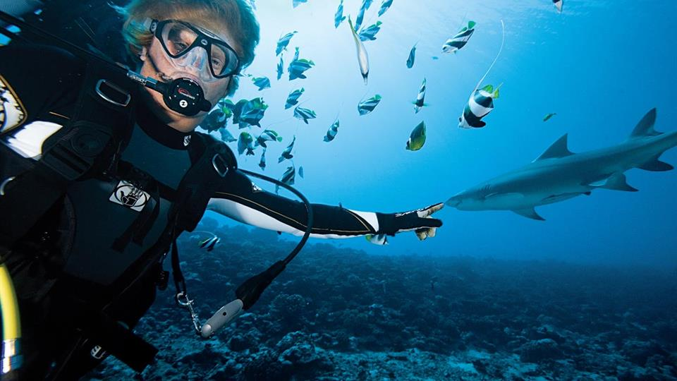
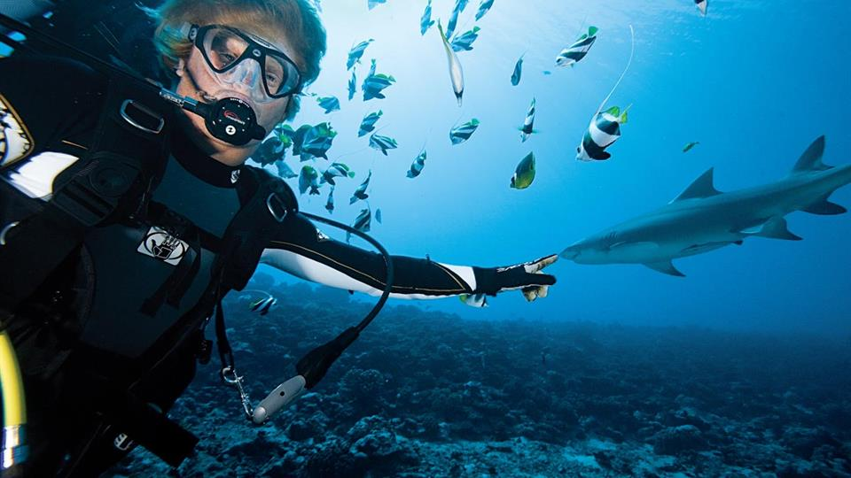
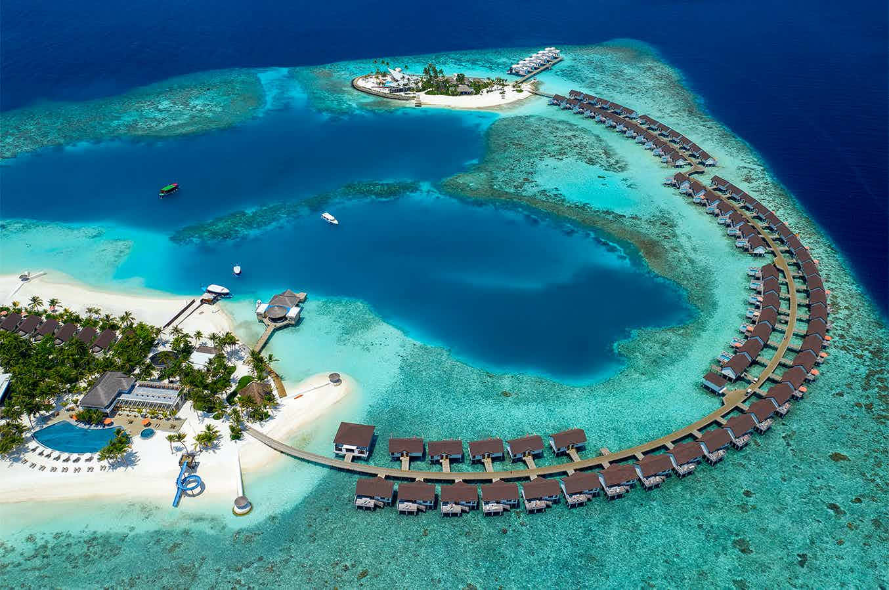
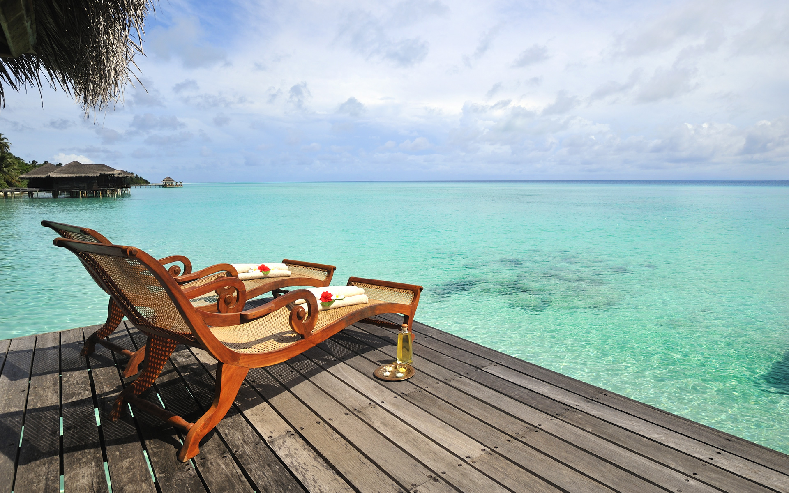
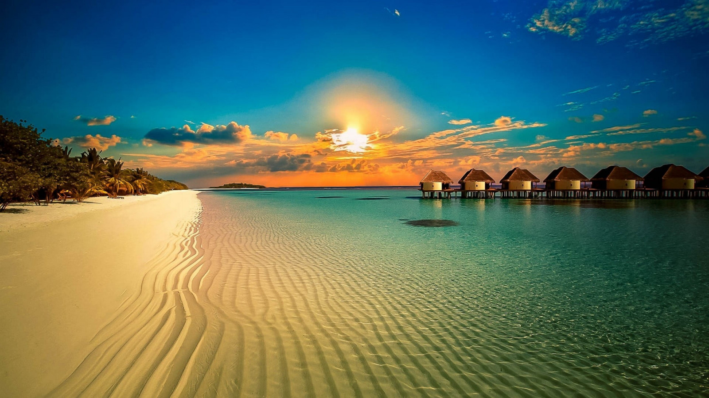
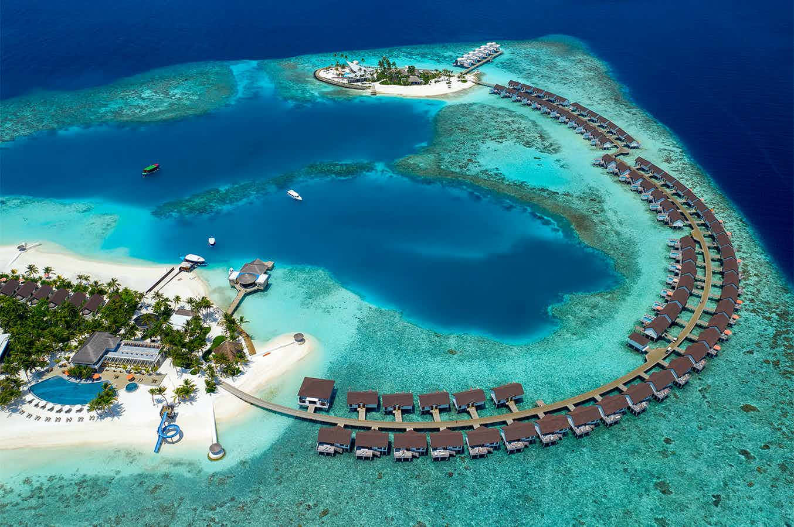
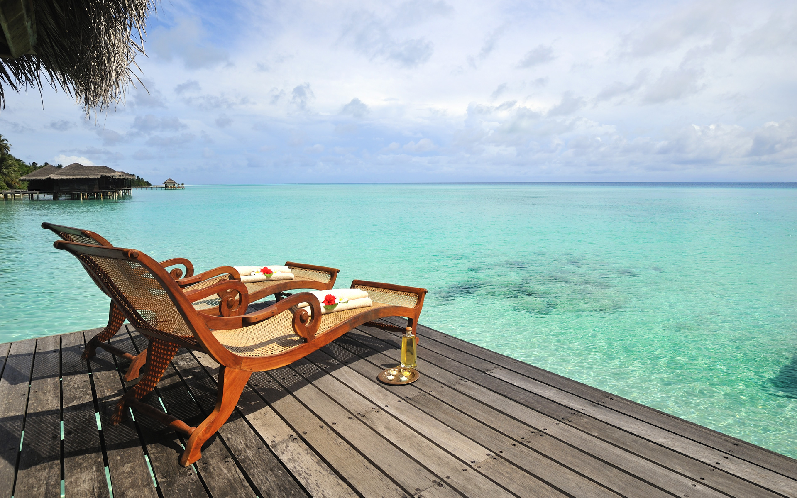
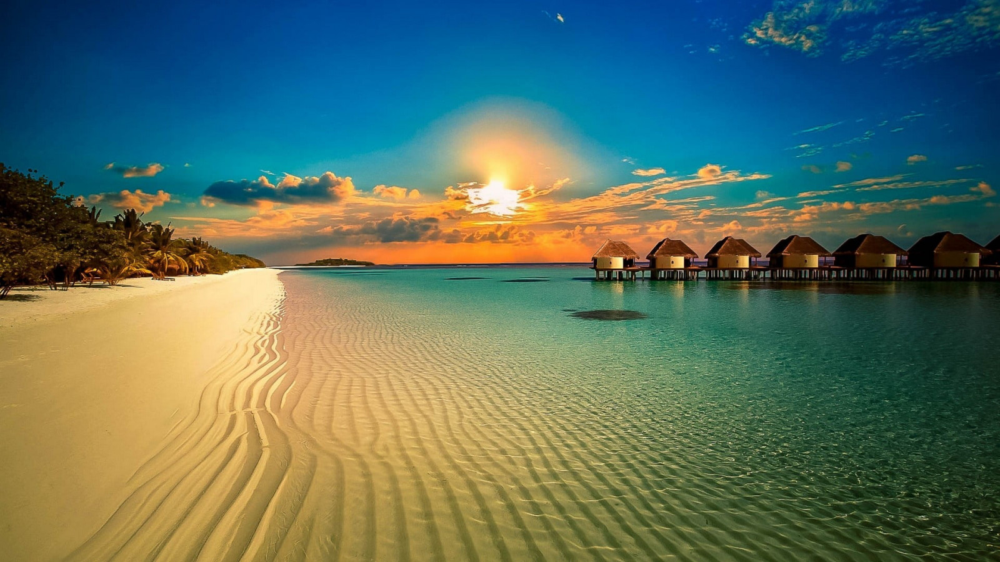

Ostrva Pacifika
Ostrva Pacifika nude mirne plaže, koralne grebene i kulturu koja će vas očarati. Posetite Fidži, Havaje ili Bora Bora i prepustite se rajskom odmoru. Dobrodošli u raj na Zemlji - Ostrva Pacifika, gde tirkizno plavo more, bele plaže i egzotična kultura čine nezaboravne pejzaže. Tropski Bar vas poziva da istražite ove rajske destinacije koje nude odmor iz snova. Tropski Bar vam pruža priliku da istražite ova rajska ostrva i doživite luksuz i lepotu koje nude. Bez obzira na to da li tražite avanturu ili potpuni mir, Ostrva Pacifika čekaju da budu otkrivena. Vaša avantura počinje ovde!
Bora Bora, Francuska Polinezija - Rajski Kutak Tihog Okeana:
Bora Bora, ostrvo sa prepoznatljivim tirkiznim lagunama i luksuznim bungalovima iznad vode, pruža savršen odmor u raskošnom okruženju. Ronjenje s morskim psima i opuštanje na belim plažama čine ovo ostrvo rajskim mestom.
 

Fidži - Arhipelag Osmeha:
Fidži, arhipelag od 333 ostrva u Južnom Pacifiku, poznat je po svojoj gostoljubivosti i netaknutoj prirodi. Beli pesak, tirkizna voda i tradicionalni kava-ceremonijali čine ovo ostrvo savršenim mestom za opuštanje.
Havaji, SAD - Raj Pod Vulkanima:
Havaji, arhipelag vulkanskih ostrva, nude raznovrsnost od vulkanskih pejzaža do prelepih plaža. Posmatrajte izlazak sunca na vulkanu Haleakala, surfujte na legendarnim talasima na Oahu-u i uživajte u ukusima havajske kuhinje.
Palau - Zlatne Plaže i Podvodne Čarolije:
Palau, tropski raj sa kristalno čistim vodama i bogatom podvodnom florom i faunom, pruža jedinstveno iskustvo ronjenja. Posetite Rok Arke, Plavi Ugao i fascinantne kamenčiće Milky Way.
Samoa - Ostrvo smeha i Tradicije:
Samoa, ostrvo gde se moderno susreće sa tradicijom, očarava svojim prirodnim lepotama i lokalnim običajima. Posetite Vaias i To Sua Oceano Trench, i učestvujte u tradicionalnim samoaškim plesovima.
Maldivi - Raj Na Atolima:
Maldivi, ostrva na Indijskom okeanu, poznata su po luksuznim odmaralištima iznad vode i fascinantnim koralnim grebenima. Ronjenje, ronjenje s maskom i perajama, i opuštanje na privatnim plažama čine ovo ostrvo rajskim mestom za medeni mesec i opuštanje.
 




